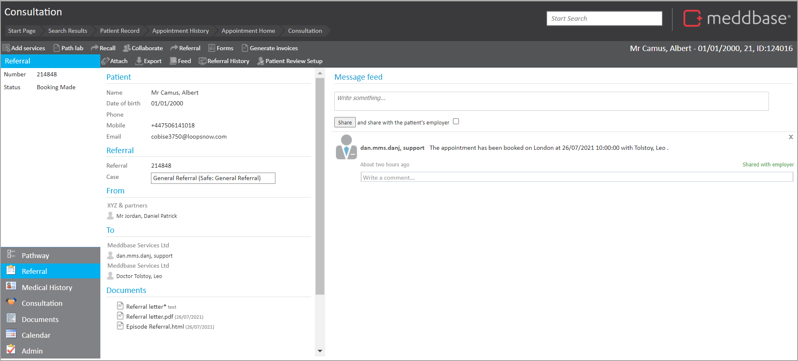
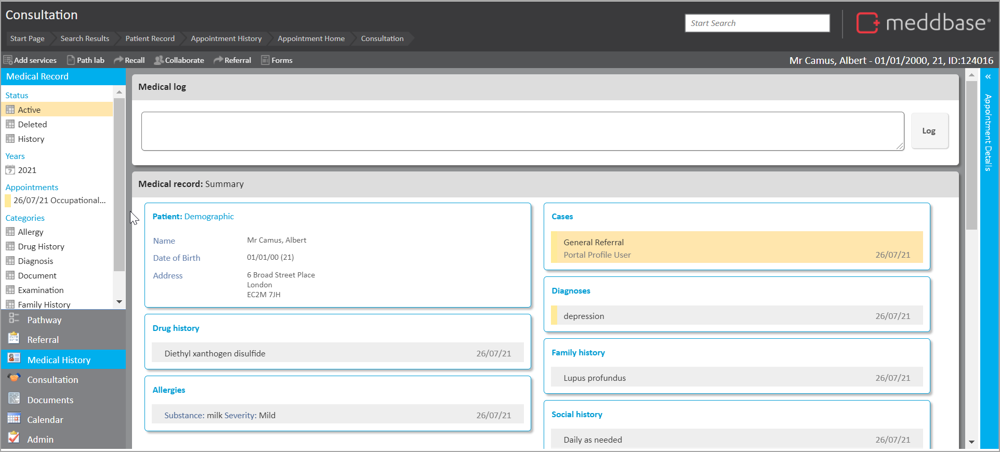
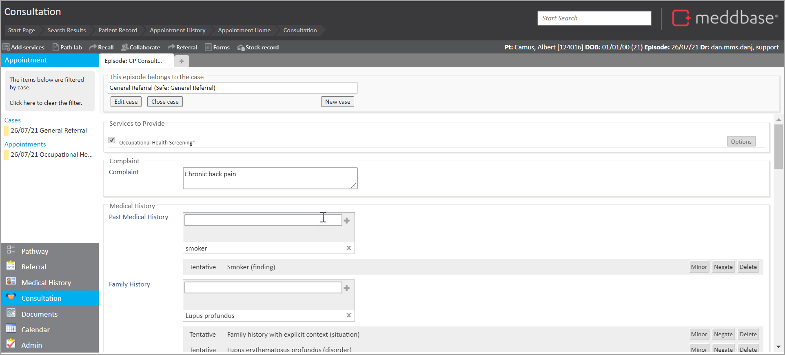
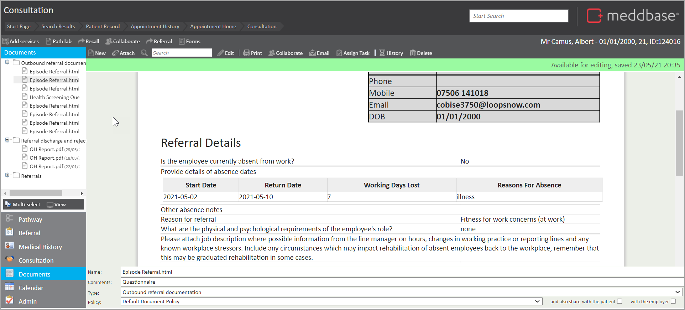
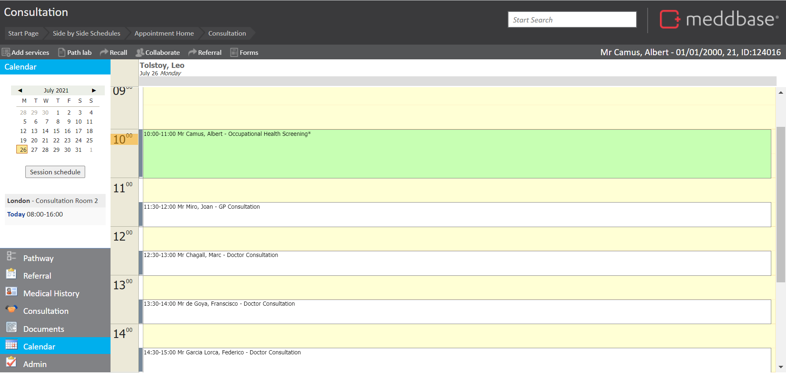
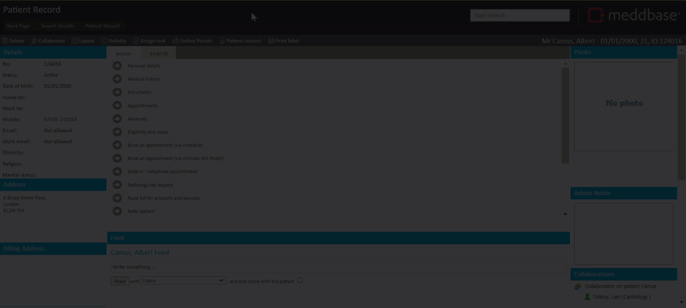

Once an appointment has been marked as arrived, and the patient being seen, you will then be taken to the consultation suite. From there, Meddbase allows the user to view a range of different features relating directly to the patient and the appointment.
In the Consultation suite, you can add medical notes into a consultation and review referrals, documents and medical history for a patient.
This article shows you how to access the Meddbase Consultation suite pages and summarises the different features you have available when you get there.
From the patient record, you can access the Consultation suite as follows:
1. Select Appointments
2. Select the appropriate appointment from the Appointments page list
At this point, the steps will vary, depending on whether the patient has been arrived. In the scenario where they have been arrived and are being seen:
3. Select Go to consultation
The Consultation suite pages are available.
From the start page, you can:
1. Navigate to the Schedule (via the Meddbase logo)
2. Select the appropriate appointment from the diary
3. Select Go to consultation
In practice, steps will vary, as noted above, depending on whether the patient has been arrived and are being seen.
When you access the Consultation suite, you will see a range of sections at the bottom left of the page
When an appointment is joined to a pathway, you can select the Pathway section to view the pathway.
The Referral section will show you referral information, if relevant, for this appointment. This would include the origin of the referral, documents attached to the referral and to whom the referral was addressed.

Here you can review all medical history information including consultation notes, past medical history, prescriptions, pathology results etc. This section displays the comprehensive medical record. It also displays information about the current appointment including the attendees, appointment date and time, subject and notes.

Here you can record information relating to the appointment. Using the clinical form, targeted information can be captured against the record. Using the numerical values section, values such as BMI, weight and height can be captured and reported against.

As you enter data into the consultation page, Meddbase will automatically save the data. While you are typing, a red box will appear to indicate the data has not yet been saved. A green box will appear around the edge of the text box you are typing into when you move away, to indicate the data has been saved.
If the text box does not turn green, your data has not been saved and there is an issue with your connection. Please report this to a member of the Meddbase team.
If you are logging a vaccination, enter the details into the service directly. The vaccination log section will be displayed directly under the vaccination.
If you are requesting pathology, you must add the service to the appointment first.
The documents section displays all attached documentation relating to the medical record. Here attached documents can be downloaded via the document manager and viewed. MS word documents, Images and documents created using the in-built editor can be viewed on-screen.

The calendar takes you back to your personal calendar for the day. Here you can easily move onto the next appointment of the day or open other appointments and meetings.

The Admin section will show you any outstanding fees relating to the appointment. If group billing is enabled you will also see any outstanding debt relating to the debtor of the appointment.
The video below provides a whistle-stop tour of accessing the Consultation suite from the appointment list and then briefly introduces some of the different pages.
